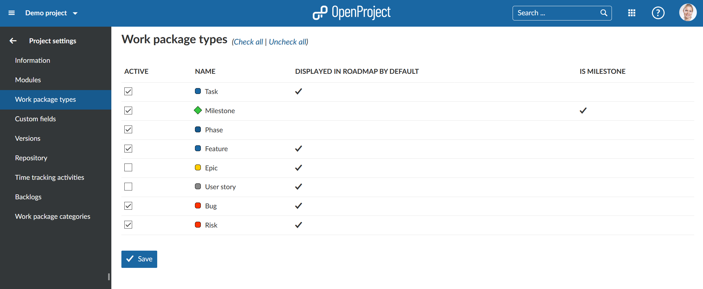

Activate or deactivate work package types for a project. Select the respective project via the project drop-down menu at the top left in the header navigation and choose -> Project settings -> Work package types in the project menu.

Check the different types which you want to enable for your project. In the table you will also see if the work package types is displayed in the roadmap by default and if it is a milestone.
Press the blue Save button to confirm your changes.
Work package types can be managed in the System Administration -> Work packages -> Types.